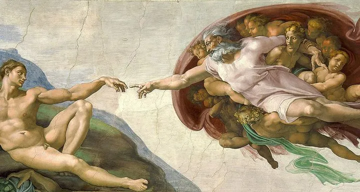

RenascentistaArt
- Leonardo da Vinci
- Michelangelo Buonarrot
- Rafael Sanzio
- Donatello
O QUE FOI O RENASCIMENTO? O renascimento foi um período cultural, artístico e intelectual que floresceu na europa entre séculos XIV e XVI. Caracterizado pelo renascimento do interesse nas artes, ciências, filosofia e humanidades, foi marcado por uma redescoberta das obras clássicas greco-romanas, um enfoque no individualismo, avanços na exploração e inovações artísticas notáveis. Como na pintura e na escultura. O renascimento desempenhou um papel crucial na transição da idade média para a era moderna, influenciado profundamente a cultura europeia.
